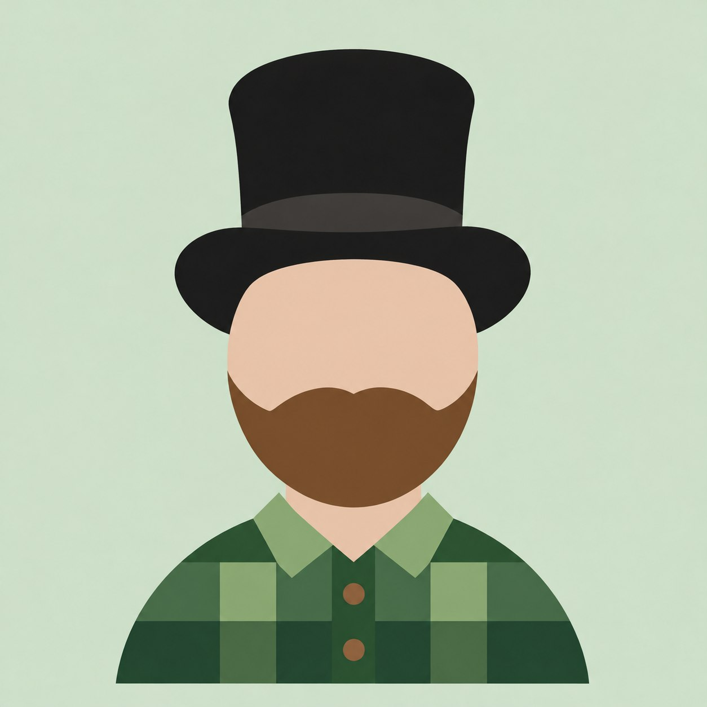
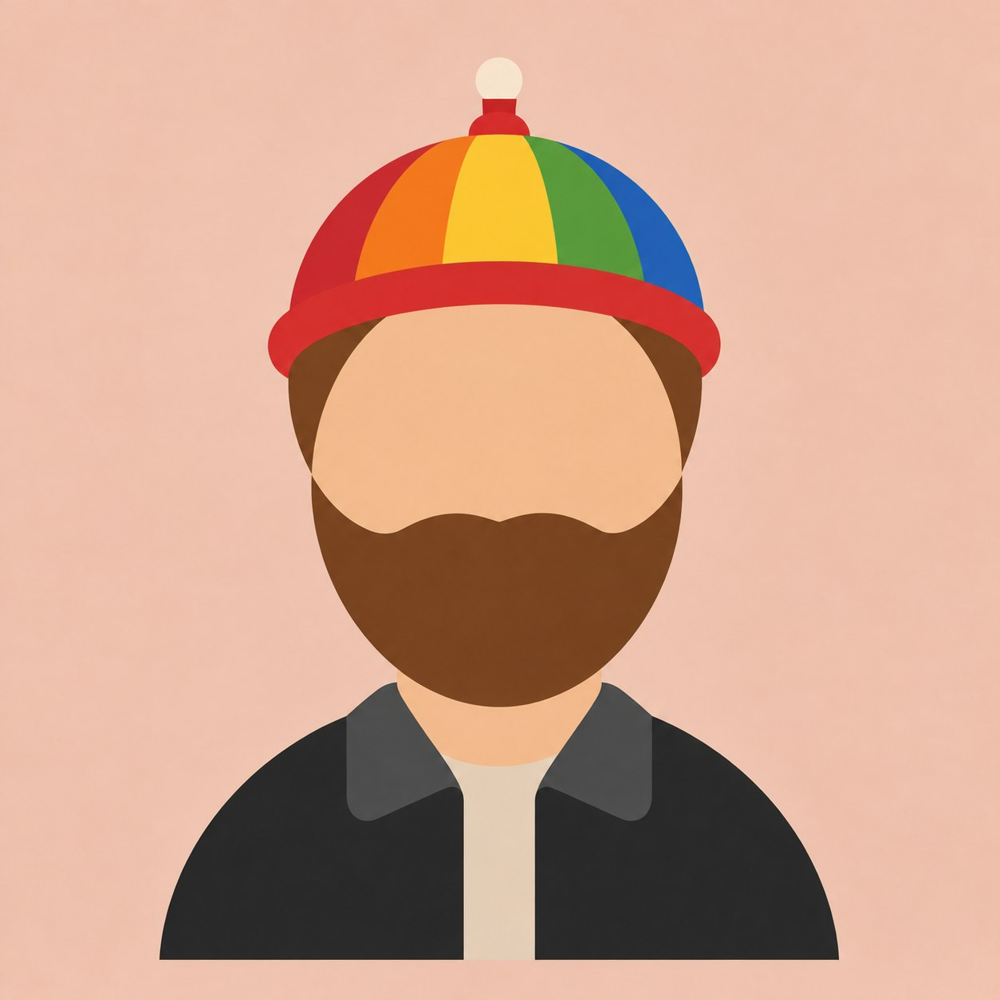
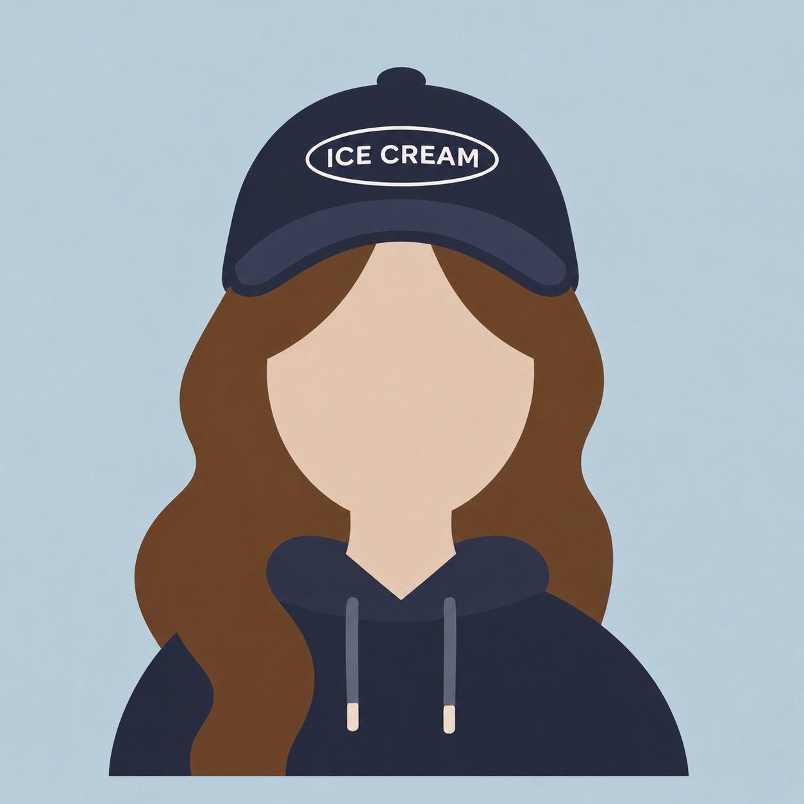

Davey
Utvecklare
Bygger och administrerar system.
Ett litet team med över 50 års kollektiv erfarenhet och fokus på integration, styrning och lösningar som fungerar i verklig drift.

Utvecklare
Bygger och administrerar system.

Support och kundkontakt
Installation på plats.

Praktikant
Har byggt webbplatsen.